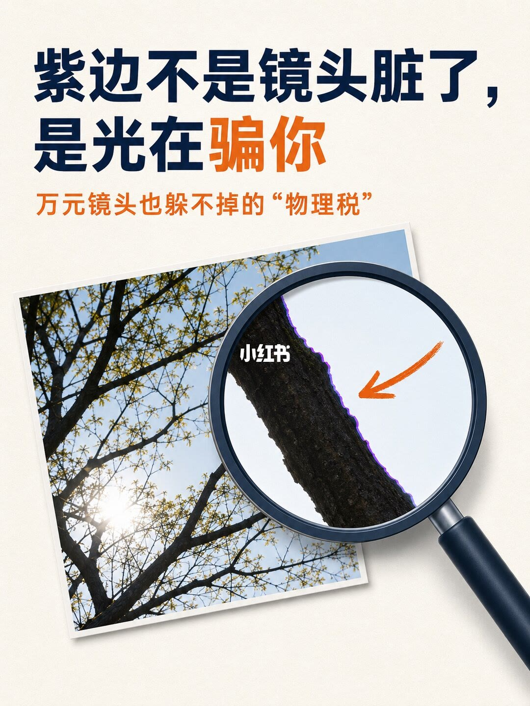
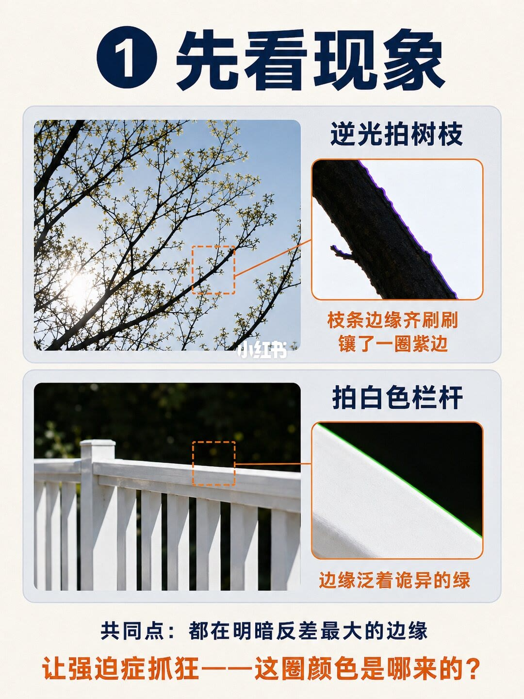
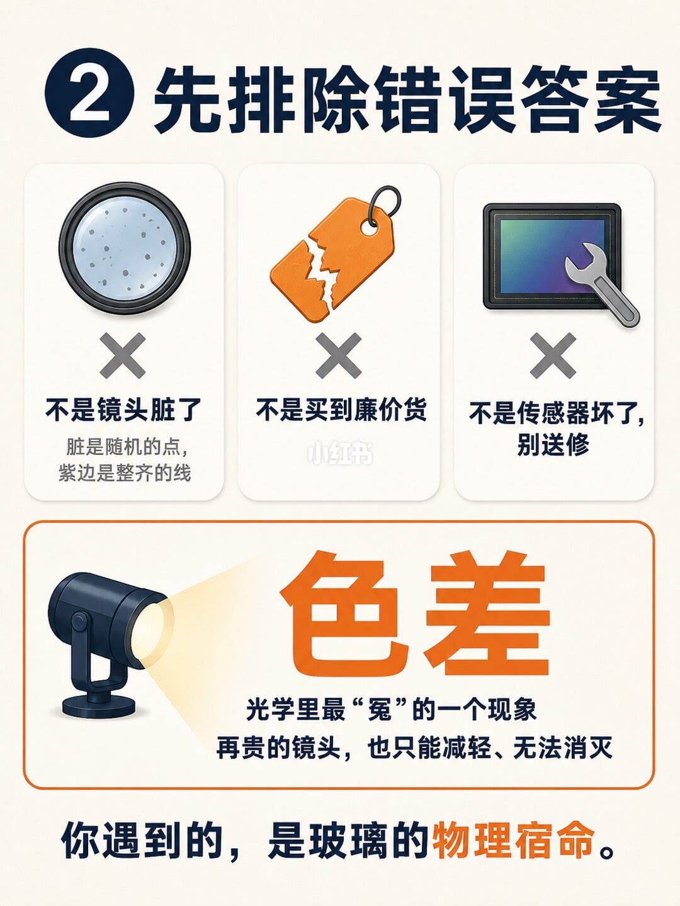
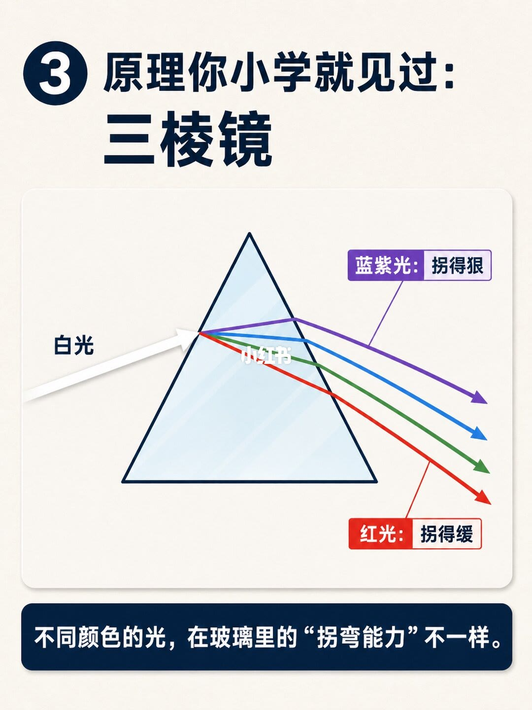
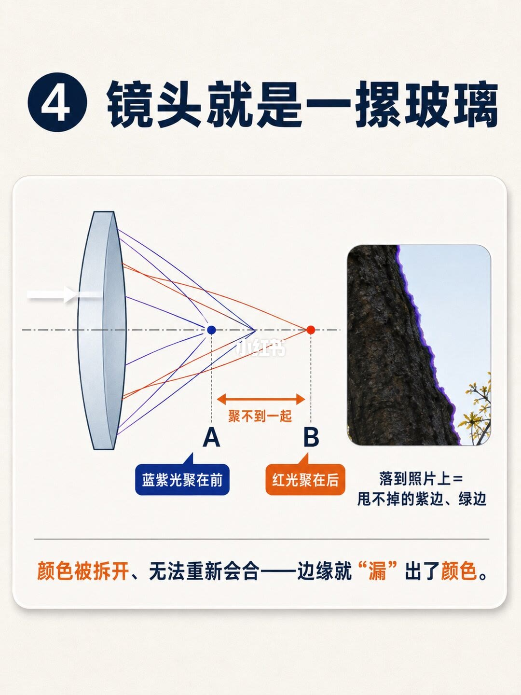
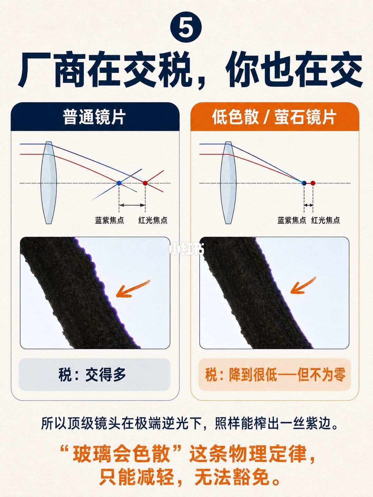
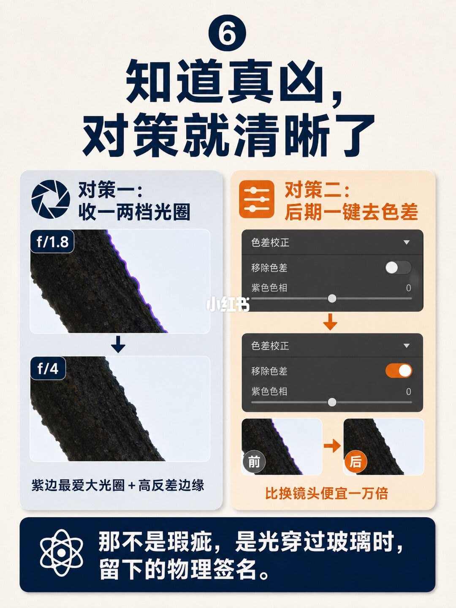

图文实录 · 小红书 · 影像派
万元镜头也躲不掉的“物理税” 99%的人却错怪
标题里的“物理税”是色差：白光穿过玻璃时，不同颜色拐弯不一样，高反差边缘会露出紫边或绿边。八页图把脏镜头、廉价货、传感器坏了这三件事排除掉，并写明再贵的镜头也只能减轻、无法消灭。标题里的“99%”没有出现在任何一页上，图上也没有焦距数字。
1/8
封面：紫边不是脏，是光在骗你

第一行深蓝字：「紫边不是镜头脏了，」。第二行：「是光在骗你」，其中「骗你」用橙色。副题整句是橙色：「万元镜头也躲不掉的“物理税”」。画面是一张略微倾斜的逆光树枝照片，放大镜圈住树干与亮天交接处，边缘有一圈紫色，橙色箭头指向这圈颜色。图上没有光圈、焦距，也没有「99%」。
2/8
先看现象：紫边和绿边都在高反差边缘

页眉是圆圈「1」加「先看现象」。上半标题「逆光拍树枝」。原图是细枝叶对着很亮的天空，橙色虚线框标出裁切位置；放大图里枝条暗边贴着亮天，有一条紫色。橙色说明分两行：「枝条边缘齐刷刷」「镶了一圈紫边」。
下半标题「拍白色栏杆」。白栏杆对着深色虚化背景，虚线框在栏杆上沿；放大后白边与暗背景之间有一条绿色。橙色说明：「边缘泛着诡异的绿」。
页脚黑字：「共同点：都在明暗反差最大的边缘」。再下面一行更大的橙色字：「让强迫症抓狂——这圈颜色是哪来的？」破折号在图上是一长划。两张样片都没有印光圈或焦距。放大框旁有一处很小的字，识别不成词，无法确认。
3/8
先排除三个错误答案，再点出色差

页眉圆圈「2」加「先排除错误答案」。三格都打了叉。左格镜头上有污点，字是「不是镜头脏了」，下面两行：「脏是随机的点，」「紫边是整齐的线」。中格是撕开的价签，只印了「不是买到廉价货」，没有再写一句解释。右格是传感器和扳手，两行：「不是传感器坏了，」「别送修」。
橙色框里大字「色差」，下面两句：「光学里最“冤”的一个现象」「再贵的镜头，也只能减轻、无法消灭」。页底：「你遇到的，是玻璃的物理宿命。」左格示意图旁另有一行很小的字，识别不成完整词，无法确认。这一页没有把「紫边等于镜头品质差」写成独立标题，价格也没有数字。
4/8
三棱镜：蓝紫光拐得狠，红光拐得缓

页眉圆圈「3」，标题两行：「原理你小学就见过：」「三棱镜」。图上白光从左侧进入三棱镜，出射后散成一束分开的色光。印出来的标注只有两处：「蓝紫光：拐得狠」「红光：拐得缓」。中间那些颜色没有逐一写名字。页底横条：「不同颜色的光，在玻璃里的“拐弯能力”不一样。」图上没有折射率、波长或玻璃牌号。
5/8
镜头是一摞玻璃，两种光聚不到一起

页眉圆圈「4」加「镜头就是一摞玻璃」。示意是一片凸透镜：蓝紫色光线在较近处交于标了「A」的点，红光在更远处交于「B」。A 下方写「蓝紫光聚在前」，B 下方写「红光聚在后」，两点之间的双向箭头写「聚不到一起」。右侧照片是暗树干贴着亮天，边缘有紫边，说明写成「落到照片上=」「甩不掉的紫边、绿边」。页底：「颜色被拆开、无法重新会合——边缘就“漏”出了颜色。」A、B 只是示意图上的字母，没有毫米或焦距。
6/8
普通镜片税交得多，低色散和萤石也不为零

页眉圆圈「5」加「厂商在交税，你也在交」。左列标题「普通镜片」：蓝紫焦点和红光焦点隔得开，样片暗边有较宽的紫边，灰底结论「税：交得多」。右列标题「低色散 / 萤石镜片」：两种焦点靠得很近，同一类边缘的紫边变细、变淡，橙底结论「税：降到很低—但不为零」。破折号在图上是一短划。
页底黑字：「所以顶级镜头在极端逆光下，照样能榨出一丝紫边。」橙色大字两行：「“玻璃会色散”这条物理定律，」「只能减轻，无法豁免。」两列都没有写具体镜头型号、价格或光圈。
7/8
对策：收光圈，或后期去掉色差

页眉圆圈「6」，标题两行：「知道真凶，」「对策就清晰了」。左栏「对策一：收一两档光圈」。同一根暗枝贴着亮背景，上图标「f/1.8」，右缘紫边很宽；下图标「f/4」，紫边明显收进去。箭头从上一张指向下一张。栏底：「紫边最爱大光圈＋高反差边缘」。图上印出的光圈只有这两个：f/1.8 和 f/4。没有焦距，也没有把「一两档」再写成别的光圈值。
右栏「对策二：后期一键去色差」。面板标题是「色差校正」，能读到的控件字是「移除色差」和「紫色色相」。一处开关呈关闭，一处呈打开。下面两个圆裁切标了「前」和「后」：前有紫边，后边缘回到中性的深色。橙色一句：「比换镜头便宜一万倍」。软件名称没有印出来，「一万倍」是这页的说法，不是报价。
页底深蓝条：「那不是瑕疵，是光穿过玻璃时，留下的物理签名。」
8/8
收尾提问：你当时怪过什么
大字两行：「你第一次发现紫边时，」「以为是什么？」下面：「评论区坦白：怪过镜头脏的举手，」「差点送修的报个到」。其中「怪过镜头脏」和「差点送修」用了橙色。样片是暗枝对着亮天，边缘有紫边，照片里的深色角标写着「100%放大」。旁边有放大镜、问号和对话框的线稿。这一页没有新的光圈、焦距或操作步骤。
收尾
贵镜头减税，不免税
结论
高反差边缘上整齐的紫边、绿边，图上命名为色差：玻璃把不同颜色拆开，蓝紫光聚得更前、红光聚得更后，边缘就漏出颜色。脏点、价签和送修被排除。低色散或萤石把两种焦点拉近，税降到很低，极端逆光下仍可能有一丝紫边。拍摄侧对照是 f/1.8 对 f/4；躲不开时用后期「移除色差」。
支撑页
现象在 2/8，三个排除和「色差」这个名字在 3/8，棱镜在 4/8，焦点 A/B 在 5/8，普通镜片与低色散/萤石的税额对照在 6/8，f/1.8、f/4 和后期开关在 7/8。1/8 和 8/8 负责提问，不增加新参数。
边界
图上没有焦距。光圈数字只印了 f/1.8 和 f/4，「收一两档」是左栏标题，没有第三档。标题里的「99%」和「万元」没有在内页被写成统计或价目。第 6 页没有镜头型号。第 7 页没有软件名，「一万倍」不能当成价格。第 4 页中间色光没有逐色命名。第 2 页放大框旁和第 3 页污点图旁各有一处小字无法确认。绿边只在第 2 页作为现象出现，第 7 页的前后对照写的是紫边。